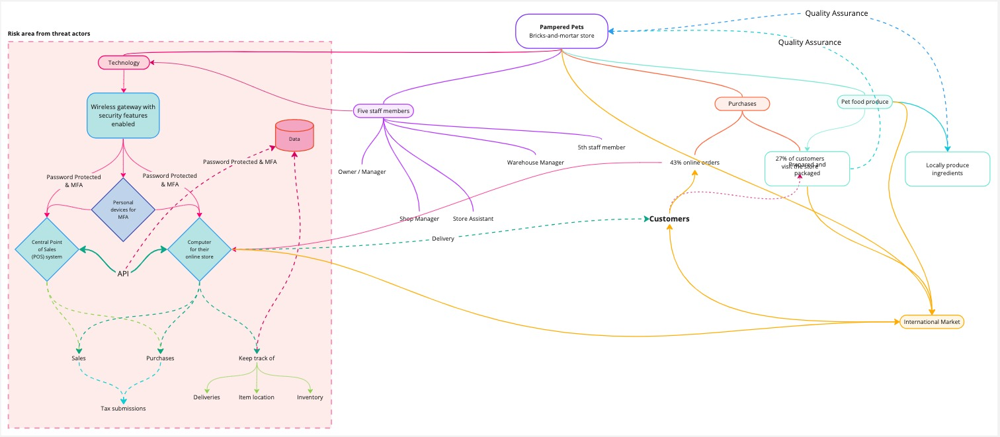

1. Introduction
This report assesses possible risks for Pampered Pets utilising the FAIR methodology. The report outlines two scenarios for the store: one in which it functions as an independent physical store with a rudimentary IT setup and another in which it has a global online presence.
Pampered Pets has articulated its intention to enhance its operations by digitising its processes. This strategic initiative curtails expenditure while broadening the business's domestic and international customer base. It is worth noting that this decision was arrived at following a recommendation from one of the company's esteemed shareholders.
2. Risk assessment and methodology.
In the context of this report, a risk assessment will be conducted using quantitative and qualitative risk assessment techniques. Both methodologies will provide a general perspective on risk management by addressing various facets of risk (Cisco Press, 2017).
2.1. FAIR (Factor Analysis of Information)
The FAIR methodology is a well-regarded framework for managing operational risk and information security effectively. It is worth noting that while FAIR is not a standalone cybersecurity framework, it works in conjunction with existing frameworks such as ISO2700x to safeguard an organisation's sensitive data (Barney, 2023; FAIR Institute, 2019; Siddiqui, 2022; Violino, 2021).
Figure 1: FAIR model chart for operational risk (McCoy, 2017; RiskLens, 2017).
3. Pampered Pets brick-and-mortar business

Figure 3: A diagram of Pampered Pets' current physical store displays the usage of a wireless gateway to link their store computer and an old network computer, highlighting the risk area (Miro.com, 2019).
3.1. FAIR methodology
Risk:
Unsecured email to the customer.
A wireless gateway is connected to an old networking computer prone to vulnerabilities, and a store computer is not a POS.
Loss Event Frequency:
In a brief period, the computers at the store will no longer be able to process sales transactions.
Threat Event Frequency:
Threat actors could immediately hold the store to ransom, resulting in a halt to all business operations.
Vulnerability:
Due to the potential risk of attack, trade disruption may result in financial losses.
Threat Capability:
Malware can hold the business to ransom; customer records via email, including records of internal and external suppliers, could be exposed.
Resistance Strength:
Due to the company's inadequate IT infrastructure, cyber attackers can gain control of the entire system and cause considerable damage to the company's operations in a matter of minutes.
Secondary Lost Event Frequency:
Due to the company's size, external stakeholders will know of any cyberattacks within hours, which will instantly have a negative effect.
Productivity Loss:
Inability to process any transaction and verify any available stock.
Response Cost:
Obtain advice from cybersecurity professionals to investigate and mitigate the problem.
Replacement Cost:
Replace all IT equipment, including old produce that may not be suitable for consumption.
Competitive Advantage Loss:
Threat actors who obtain access to their system could make company assets publicly available and data records being made public.
Fines and Judgement:
Fined for breaching customer data can result in up to $100,000, based on US GLBA and GDPR law and imprisonment (Cyberinsureone.com, 2021)
Reputational Damages:
Customers may switch to competitors, harming their reputation and losing public trust and potential investors. This can lead to closure and job loss.
4. Pampered Pets Digital sphere
Figure 4: A diagram of Pampered Pets' digital landscape highlights a central network that connects their POS with a secondary computer to manage their online sales, website, inventory, and international presence (Miro.com, 2019).
4.1. FAIR methodology
Risk:
Open to international cyber threats
Any breaches will have an impact on both local and international customers, which will lead to harsher fines
Loss Event Frequency:
If threat actors obtain access to any system, the loss will not be imminent as each system has its layer of security.
Threat Event Frequency:
Multiple layers of security will be in place to gain access to the system. The network gateway will have security features, and the POS and computer will have encrypted passwords. Additionally, MFA will be enabled, requiring significant effort, including brute force and social engineering tactics, to access the system. This process could take several months or even years.
Vulnerability:
If threat actors infiltrate the system, trading will be disrupted locally and internationally, resulting in financial losses.
Threat Capability:
Infect systems with malware, ransomware, and data breaches of customers, staff members and suppliers.
Resistance Strength:
Obtaining access to the system will be difficult due to the multi-layered security, with each system requiring a different password and MFA.
Secondary Lost Event Frequency:
The negative impact on stakeholders will not be too severe since the network can be saved due to the fragmented IT structure, and threats can be mitigated.
Productivity Loss:
Unable to fulfil online orders or take payment.
Response Cost:
Cybersecurity professionals will investigate and work to resolve the issue.
Replacement Cost:
POS and/or store computers may be replaced if the antivirus cannot quarantine malicious malware.
Competitive Advantage Loss:
The threat of data being leaked or being unable to access the systems will affect the company’s reputation and sales.
Fines and Judgement:
Fines for breaching customer records under GDPR law and imprisonment.
Reputational Damages:
The company brand will be tarnished with a loss of trust from customers, who may opt for a competitor's brand; however, measures were taken to prevent cyber incidents. Therefore, stakeholders may want to implement further security measures.
5. Conclusion
The current approach of managing online purchases via email, followed by physical in-store payment and pickup, exposes customers to potential security threats if the email system becomes compromised. The warehouse manager's outdated computer system for delivery and inventory tracking presents critical issues, including outdated software and hardware, leaving the system vulnerable to security breaches and lacking security patches and updates. Furthermore, the absence of support and updates for the obsolete system can lead to prolonged downtime in case of technical issues. Additionally, the company's use of a wireless gateway to connect their computers is concerning, as it poses a significant security risk if the gateway is incompatible with the outdated system (Cisa.gov, 2021; Giansanti, 2021; Ncsc.gov.uk, 2021).
The company moved to a digital operation to support international trade. However, its IT infrastructure still includes a wireless gateway that should have built-in security features. These features include DDoS prevention, WPA3 certification for data encryption, protection against brute-force attacks, VPN configuration to encrypt traffic, and automatic firmware updates (Higgins, 2023).
The organisation's traditional computer system should be replaced with a contemporary POS system that offers enhanced functionality for sales transactions and inventory monitoring and seamless integration with its online store via POS API. This transition eliminates the need for manual inventory recording, albeit with the possible requirement of an additional computer for managing the online store. There may also be a need to recruit extra personnel to cater to this purpose (Bigcommerce.co.uk, 2024; Nguyen, 2021; Squareup.com, 2024).
For optimal security, access to the new system will be password-protected using a non-dictionary-based password whilst enabling MFA for an additional layer of protection.
According to Tighe (2023), 43% of online shoppers in the United States shop online. Companies specialising in online retail can use this trend to increase their sales volume and brand recognition by building a strong online presence. Existing customers can benefit from this by having their goods delivered instead of visiting the store. This strategic initiative has the potential to expand the company's customer base on a global scale and explore alternative supply chain channels that could lead to cost savings over their current arrangements.